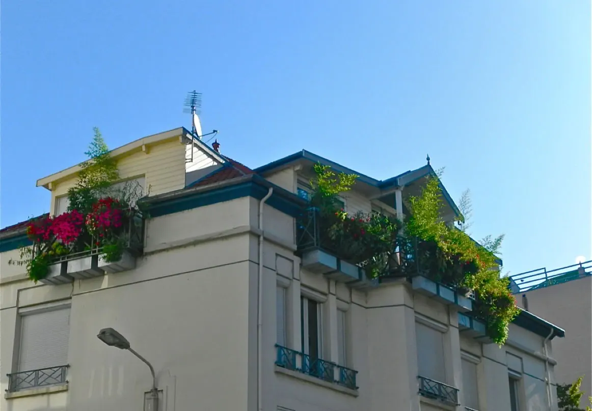
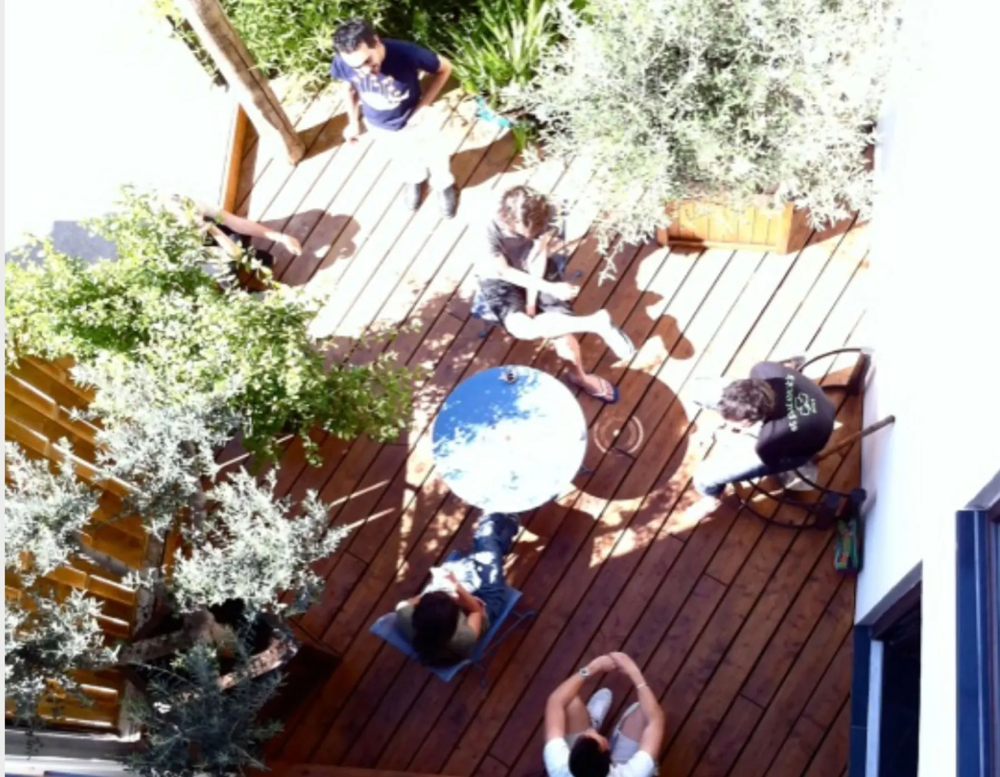
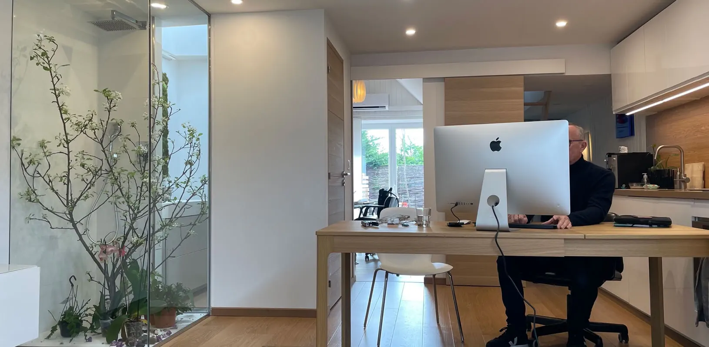

Une oasis urbaine
Plantation intensive avec un espace racinaire aussi grand que possible, bacs dessinés sur mesure et espèces choisies pour donner aux appartements un extérieur proche de la nature.
Logements Caluire →Le végétal
Au centre de nos conceptions se trouve l’humain, mais aussi la végétation déjà présente ou à développer. Notre objectif : une situation gagnant-gagnant.






Notre approche
Nos bâtiments deviennent des écosystèmes vivants, dans lesquels nous nous efforçons de fusionner harmonieusement nature et architecture.
Nous privilégions les éléments architecturaux qui servent cet objectif, de préférence sans installations « high-tech », et idéalement en lien direct avec le sol. Des murs végétalisés aux toits verts, en passant par les jardins suspendus ou les cours intérieures verdoyantes, nous intégrons les plantes autant que possible.
Cela confère une dimension esthétique et sensorielle unique à chaque réalisation et contribue à un bon climat intérieur et à une bonne qualité de l’air. Nous aimons voir nos bâtiments changer au fil des saisons, sans consommer de ressources pour des « gestes » architecturaux souvent éphémères.
L’objectif est que les urbains trouvent une symbiose avec la nature et la préservent, tout en développant un sens de responsabilité envers elle.
Dans nos projets
Plantation intensive avec un espace racinaire aussi grand que possible, bacs dessinés sur mesure et espèces choisies pour donner aux appartements un extérieur proche de la nature.
Logements Caluire →Sur un terrain presque entièrement imperméabilisé : plantes qui ombragent les façades, toits transformés en terrasses vertes avec treillis, serres et champignonnière d’agriculture urbaine.
grünboX-Vienne →La dalle d’accès au garage devient un jardin praticable : la voiture électrique se gare sur un potager stabilisé d’herbes aromatiques, entouré de jardins verticaux.
Tiny House Urbaine →L’immeuble s’ouvre par un jardin japonais, le toit du garage est végétalisé et les habitants partagent un jardin commun planté de figuiers.
Logements Vienne →Une barge transformée en serre flottante : l’aquaponie associe culture de plantes et pisciculture, avec une façade végétalisée et un espace pédagogique.
Truite et Basilic →Au sud de la maison au bord du lac, les baies vitrées s’ouvrent sur une cour intérieure plantée de cactus.
Maison Jarret →Au-dessus du dojo et des logements, une terrasse sur le toit aménagée avec beaucoup de verdure.
Judo Club Lyon 6e →La façade sud de l’extension alterne murs végétalisés, perforés et vitrés pour faire entrer la lumière naturelle.
École Condorcet →Sur une ancienne friche entre les Monts d’Or et la Saône, des vallées vertes et des bassins de récupération des eaux de pluie.
Projet Couzon →Pourquoi planter
Grâce à l’évapotranspiration, les plantes réduisent sensiblement la chaleur en ville et la température ressentie, l’été de plus en plus chaud.
Une végétation bien implantée retient l’eau de pluie ou la restitue de manière différée, et réduit le risque d’inondation.
Elle offre un habitat à de nombreuses espèces et rétablit les corridors écologiques, essentiels en milieu urbain.
La présence du végétal réduit l’agressivité, favorise la convivialité et renforce le lien entre les habitants et la nature.
Palette végétale
Emplacement prévu pour présenter les espèces que l’architecte aime planter (grimpantes de façade, arbres de cour, aromatiques, plantes d’intérieur…), avec une photo et un mot sur chacune. Le site actuel ne donne pas de liste d’espèces au-delà des figuiers, des cactus et des herbes aromatiques cités dans les projets.


